Duyurular
Vefat, düğün ve toplantı ilanları, köyümüzden haberler ve köyümüzün tarihinden yazılar.
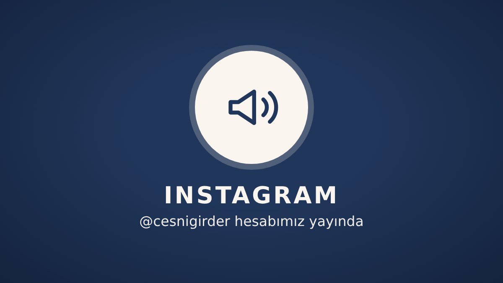
Derneğimizin Instagram hesabı açıldı
Derneğimizin Instagram hesabı yayında: @cesnigirder Köyümüzden haberleri, duyuruları, etkinlikleri ve fotoğrafları artık Instagram'da da…
Devamını oku ›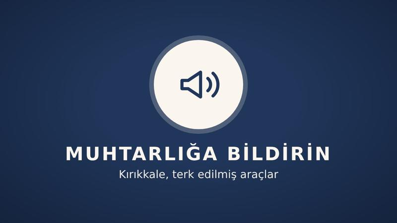
Kırıkkale'de terk edilmiş araçları muhtarlığa bildirin
Kırıkkale'de sokaklarda ve ortak alanlarda uzun süredir bırakılmış, artık kullanılamayan hurda araçların muhtarlıklara bildirilmesi istendi. Çağrı,…
Devamını oku ›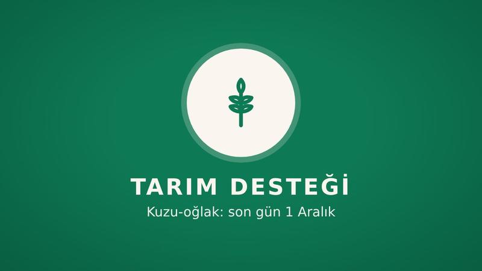
Kuzu ve oğlak desteğinde son gün 1 Aralık
Kırıkkale İl Tarım ve Orman Müdürlüğünün takvimine göre 2026 yılı kuzu ve oğlak desteğinin birinci dönem başvuruları 1 Aralık Salı günü mesai…
Devamını oku ›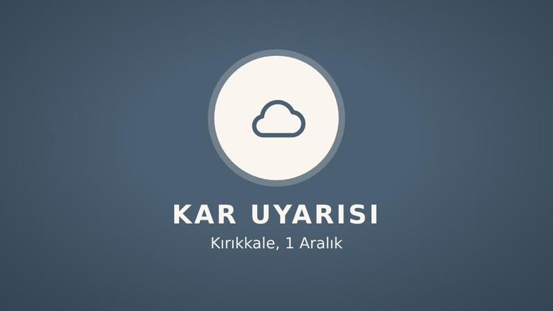
Kırıkkale'ye 1 Aralık'ta kar bekleniyor
Meteoroloji Genel Müdürlüğünün 5 günlük tahminine göre Kırıkkale'de hava önümüzdeki günlerde belirgin şekilde soğuyacak. Hafta sonu parçalı bulutlu…
Devamını oku ›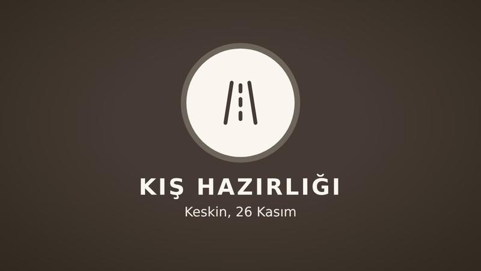
Keskin'de kış tedbirleri toplantısı yapıldı
Keskin Kaymakamı İlhan Kayatürk başkanlığında 26 Kasım'da Kış Tedbirleri Toplantısı yapıldı. Toplantıya Belediye Başkan Vekili Gürsel Demirel ile…
Devamını oku ›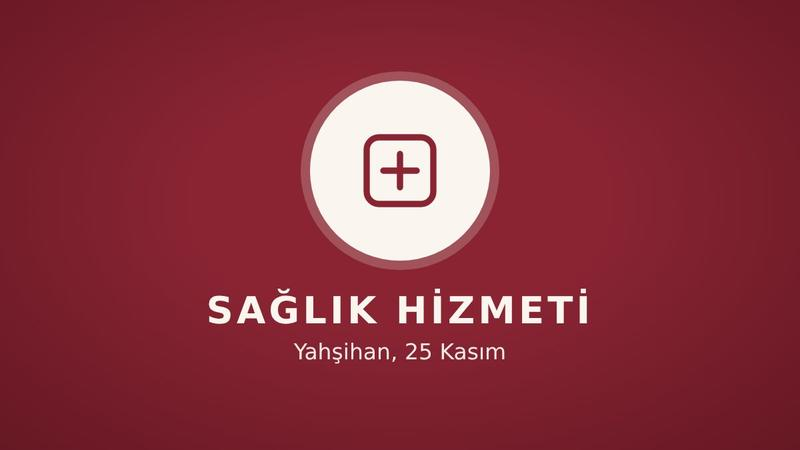
Yahşihan'da yeni sağlık müdürlüğü binası yapılıyor
Kırıkkale İl Sağlık Müdürü Op. Dr. Osman Polat, 25 Kasım'da Yahşihan'ı ziyaret etti. Ziyarette Halk Sağlığı Hizmetleri Başkanı Uzm. Dr. Hasan…
Devamını oku ›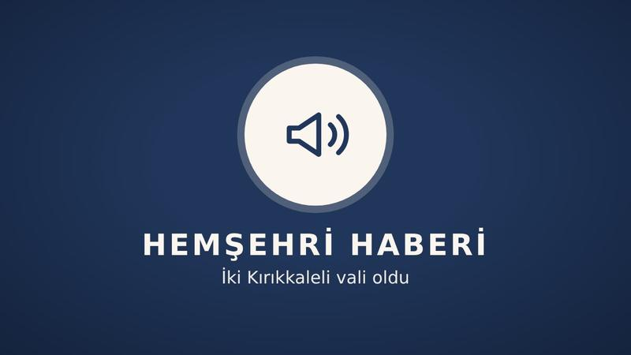
Valiler Kararnamesi'nde iki Kırıkkaleli vali oldu
Resmî Gazete'de yayımlanan Valiler Kararnamesi ile 41 ilin valisi değişti. Kararnamede iki Kırıkkaleli hemşehrimiz de yer aldı. Mülkiye Başmüfettişi…
Devamını oku ›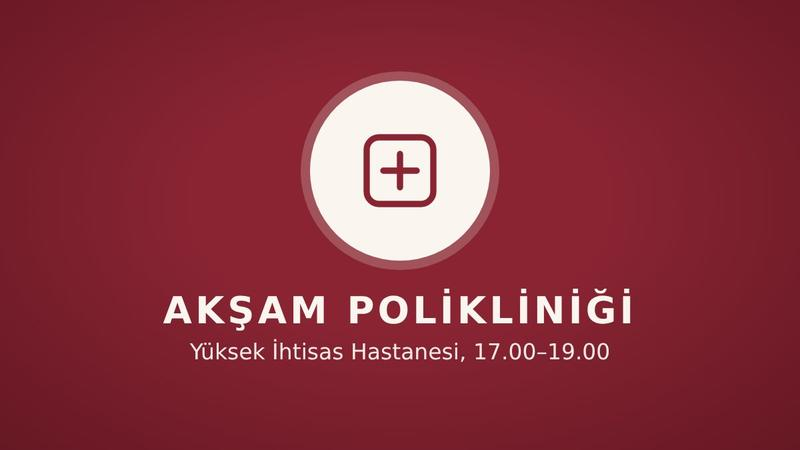
Kırıkkale Yüksek İhtisas'ta akşam polikliniği açık
Kırıkkale Yüksek İhtisas Hastanesi, gündüz hastaneye gidemeyenler için akşam polikliniği uygulamasını sürdürüyor. 25 Kasım Çarşamba günü dahiliye ve…
Devamını oku ›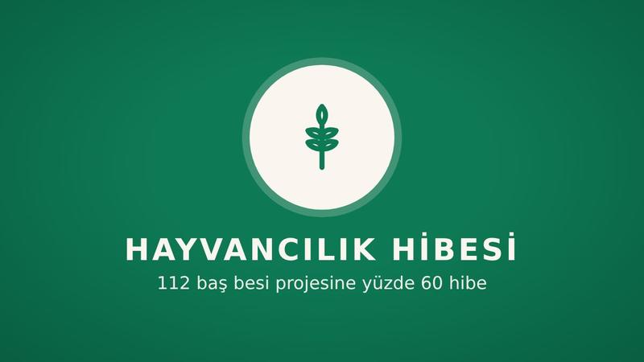
Kırıkkale'de besi çiftliği projesine yüzde 60 hibe
Tarım ve Orman Bakanlığı'nın Kırsal Kalkınma Yatırımlarının Desteklenmesi Programı'nın 17. etabında, Kırıkkale'de hazırlanan 112 baş kapasiteli…
Devamını oku ›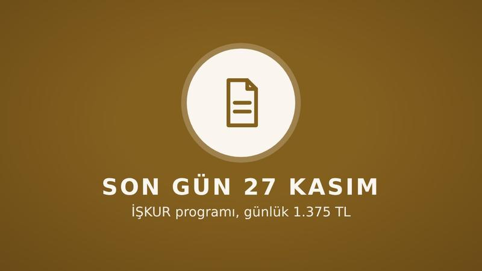
Kırıkkale'de İŞKUR ile 100 kişiye iş: son gün 27 Kasım
İŞKUR ile Kırıkkale Üniversitesi, 100 kişilik İşgücü Uyum Programı başlatıyor. Katılanlar üniversiteye bağlı birimlerde temizlik, bakım ve onarım…
Devamını oku ›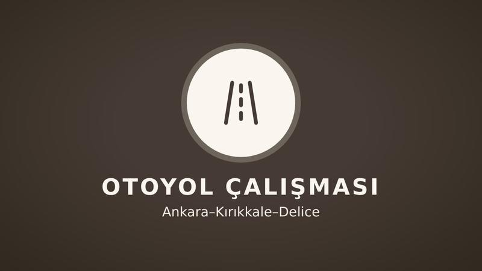
Ankara–Kırıkkale–Delice otoyolunda çalışmalar hızlandı
Ulaştırma ve Altyapı Bakanı Abdulkadir Uraloğlu, Meclis Plan ve Bütçe Komisyonu'nda yaptığı konuşmada Ankara–Kırıkkale–Delice otoyolu çalışmalarının…
Devamını oku ›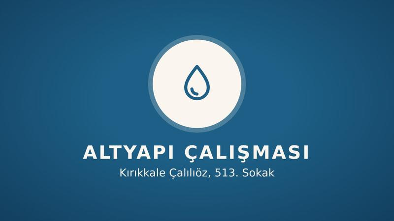
Kırıkkale Çalılıöz'de su ve kanal hattı yenileniyor
Kırıkkale Belediyesi, Çalılıöz Mahallesi 513. Sokak'ta içme suyu ve kanalizasyon hatlarını yeniliyor. 250 metrelik bölümde ana hat ve abone…
Devamını oku ›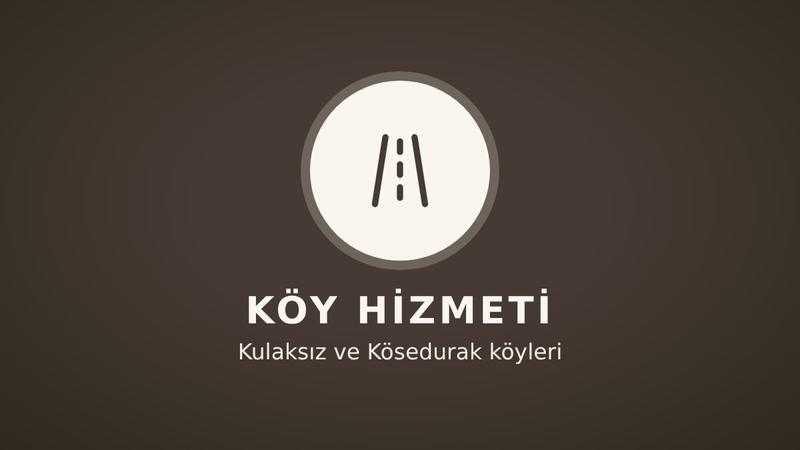
Kulaksız ve Kösedurak köylerine kilit parke döşeniyor
Kırıkkale İl Özel İdaresi, Kulaksız ve Kösedurak köylerinde kilit parke çalışmasını sürdürüyor. İl Özel İdaresi'nin açıklamasına göre amaç, köy…
Devamını oku ›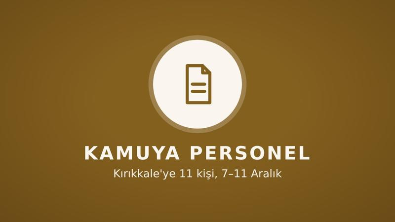
Kırıkkale'de kamuya 11 personel alınacak
İçişleri Bakanlığı, Türkiye genelinde 1.170 sözleşmeli personel alacak. Bunun 11'i Kırıkkale'de çalışacak: Delice, Karakeçili ve Sulakyurt'ta birer…
Devamını oku ›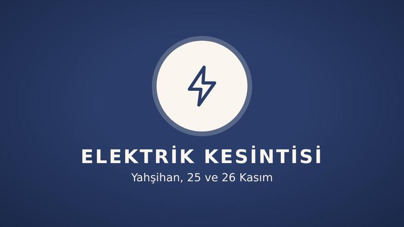
Yahşihan'da 25 ve 26 Kasım'da elektrik kesilecek
Başkent EDAŞ, şebekede yapacağı iyileştirme çalışması nedeniyle Yahşihan'da iki gün planlı elektrik kesintisi yapacak. 25 Kasım Çarşamba günü bazı…
Devamını oku ›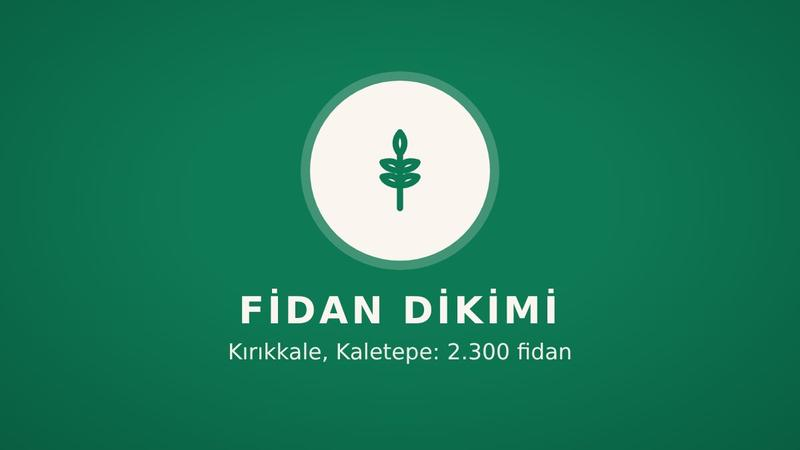
Kırıkkale'de Kaletepe'ye 2.300 fidan dikildi
Millî Ağaçlandırma Günü etkinlikleri kapsamında Kırıkkale'de Kaletepe'de fidan dikim programı yapıldı. Makine ve Kimya Endüstrisi (MKE) A.Ş.'nin…
Devamını oku ›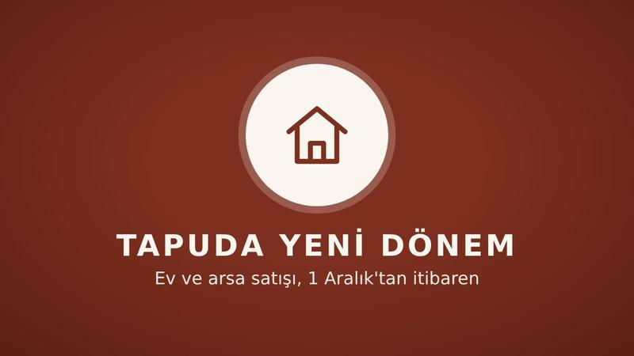
Tapuda 1 Aralık'tan itibaren güvenli ödeme zorunlu
1 Aralık 2026'dan itibaren Türkiye genelinde ev, arsa ve iş yeri satışlarında Güvenli Ödeme Sistemi zorunlu olacak. Nakit, havale ya da EFT ile…
Devamını oku ›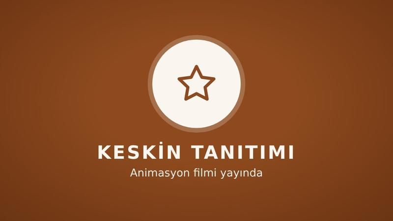
Keskin'in tarihi ve doğası animasyon filmiyle tanıtıldı
Kırıkkale Tanıtım Derneği, Keskin ilçesini anlatan üç boyutlu yeni bir animasyon filmi hazırladı. Filmde ilçenin tarihi, kültürü ve doğal…
Devamını oku ›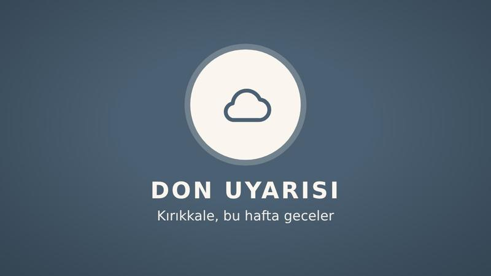
Kırıkkale'de bu hafta geceler dondurucu olacak
Kırıkkale'de gündüzleri güneşli hava sürse de geceleri hava iyice soğuyor. Tahmine göre pazartesi haftanın en sıcak günü olacak ve sıcaklık 15…
Devamını oku ›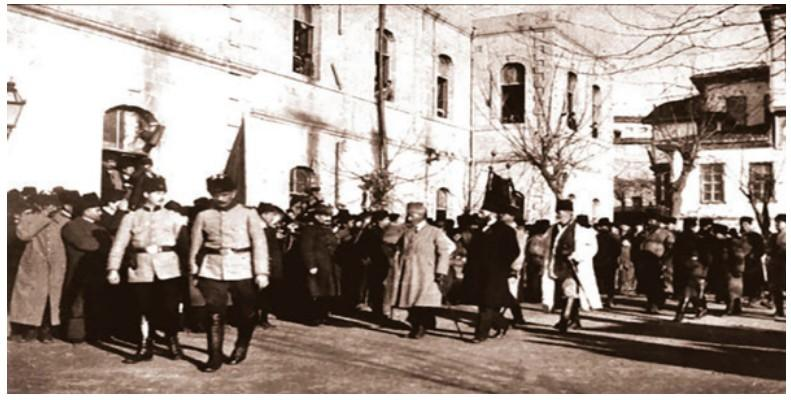
Atatürk'ün köyümüzden geçişi (1919)
Bundan 107 yıl önce, Millî Mücadele'nin ilk aylarında Mustafa Kemal Paşa köyümüzden geçti. Paşa ve Heyet-i Temsiliye, 18 Aralık 1919'da Sivas'tan…
Devamını oku ›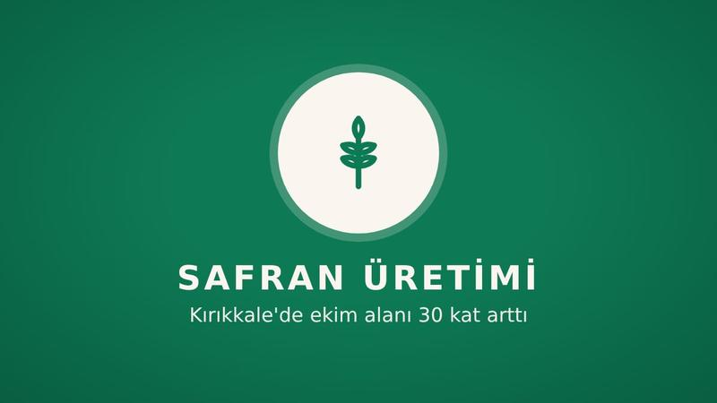
Kırıkkale'de safran ekim alanı 30 kat büyüdü
Kırıkkale İl Tarım ve Orman Müdürlüğü'nün "Safran Kokulu Hayaller" projesinde safran önce 200 metrekarelik bir deneme tarlasına ekildi. Üreticilerin…
Devamını oku ›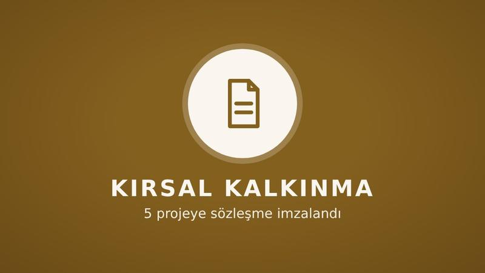
Kırsal kalkınma desteğinde 5 sözleşme imzalandı
Kırıkkale Tarım ve Orman İl Müdürlüğü, Kırsal Kalkınma Yatırımlarının Desteklenmesi Programı'nın 17. etabında sözleşmelere başladı. İl Müdürü Fatih…
Devamını oku ›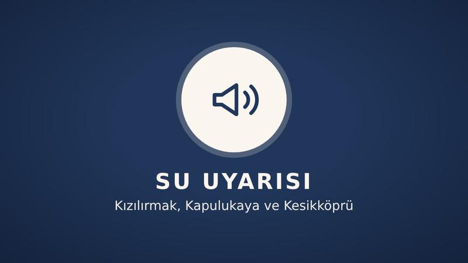
Kızılırmak'ta su seviyesi aniden yükselebilir
Kırıkkale Valiliği, Kesikköprü ve Kapulukaya barajlarındaki hidroelektrik santrallerinde türbinler çalıştırılacağı için Kızılırmak'ta suyun aniden…
Devamını oku ›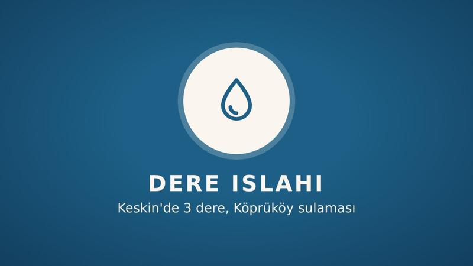
Keskin'de dere ıslahı projeleri onaylandı
Kırıkkale'de beş dere ıslahı projesi onaylandı. Bunlardan Danacıobası Taşkavak Deresi, Çipideresi ile Şarlak Deresi ve kolları Keskin'de; diğerleri…
Devamını oku ›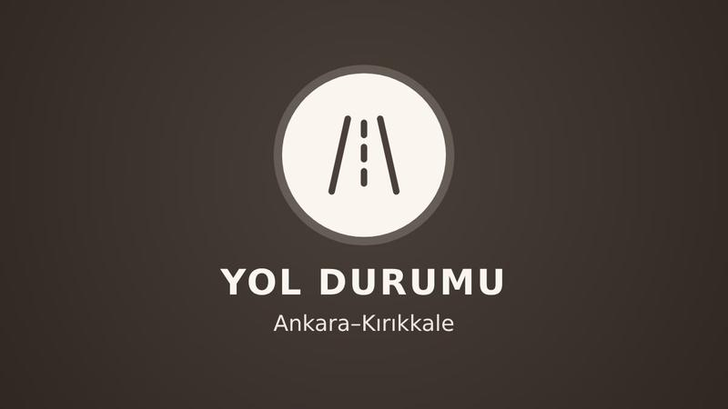
Ankara–Kırıkkale yolunda çalışma var
Karayolları'na göre Ankara–Kırıkkale yolunda birkaç noktada çalışma sürüyor. 28–29. kilometrelerde otoyol inşaatı için kontrollü patlatma yapılıyor;…
Devamını oku ›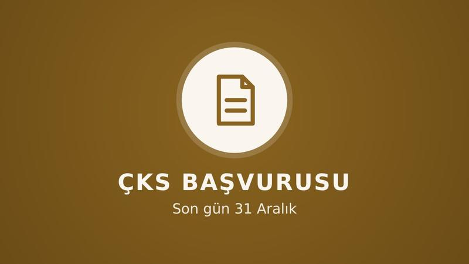
ÇKS başvurusunda son gün 31 Aralık
Çiftçi Kayıt Sistemi (ÇKS) başvuruları 31 Aralık 2026'da sona eriyor. Kırıkkale'de tarım ve su kurumlarının ortak toplantısında ayrıca ilçe ve…
Devamını oku ›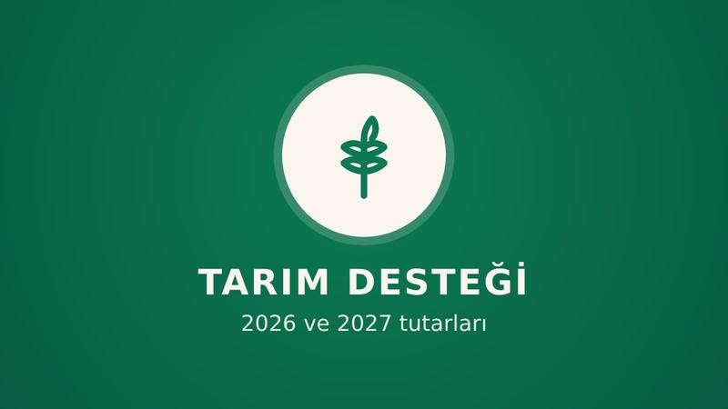
Nohut ve mercimekte destek 2027'de artıyor
Kırıkkale İl Tarım ve Orman Müdürlüğü 2026 ve 2027 destek tutarlarını açıkladı. Buğday ve arpada dekar başına temel destek 477,10 liradan 574,60…
Devamını oku ›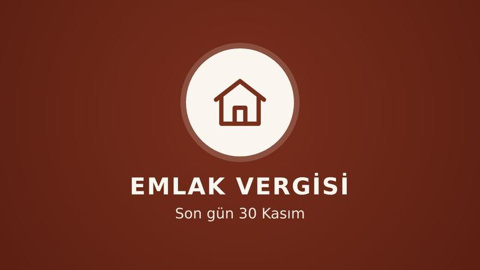
Emlak vergisinde son gün 30 Kasım
Keskin Belediyesi, emlak vergisi borcu olanları uyardı: son ödeme günü 30 Kasım 2026. Belediye, birikmiş su borçlarının da ödenmesini istedi.…
Devamını oku ›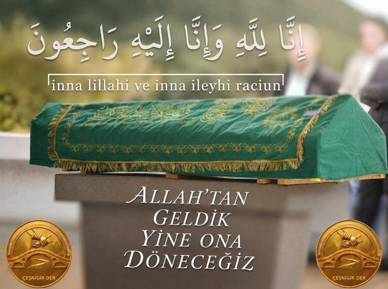
Halis ÖZBEK Hakk'ın rahmetine kavuşmuştur
Köylümüz Oğuzhan KÖPRÜLÜ ile Fuat ve Vural KÖPRÜLÜ'nün eniştesi, Binnaz ÖZBEK'in eşi Halis ÖZBEK Hakk'ın rahmetine kavuşmuştur. Cenazesi 8 Kasım 2026…
Devamını oku ›Keskin Belediye Meclisi ilçe için yeni kararlar aldı
Meclis, ilçenin ihtiyaçlarını ve süren belediye çalışmalarını görüştü; kararların ayrıntısı henüz açıklanmadı.
Devamını oku ›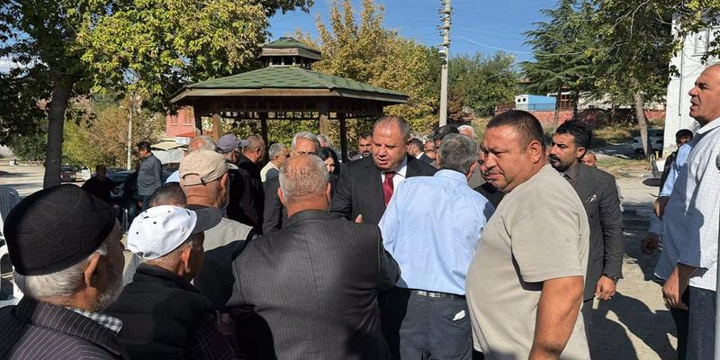
Köprüköy'de derneğimiz ziyaret edildi, talepler dinlendi
MHP Kırıkkale Milletvekili Halil Öztürk ve beraberindeki heyet Çeşnigir Derneği'ni ziyaret etti. Köylüler ve dernek üyeleri tarım, altyapı ve sosyal…
Devamını oku ›Çipideresi yolunda sona yaklaşıldı
Milletvekili Mustafa Kaplan Keskin ziyaretinde 10,5 km'lik yoldaki çalışmaları inceledi; açılış tarihi verilmedi.
Devamını oku ›Keskin'de ilk Zurna Festivali düzenlendi
Abdal kültürünün simgesi zurna geleneğini yaşatmak için Cumhuriyet Meydanı'nda kortej, halk oyunları ve usta yarışması yapıldı.
Devamını oku ›Çeşnigir-Der kapılarını açıyor: 6 Eylül'de açılış töreni
Dernek merkezi, 6 Eylül 2026 Pazar günü saat 14.00'te Köprüköy Çarşı Merkezi'nde düzenlenen törenle hizmete açıldı; tüm hemşehriler davet edildi.
Devamını oku ›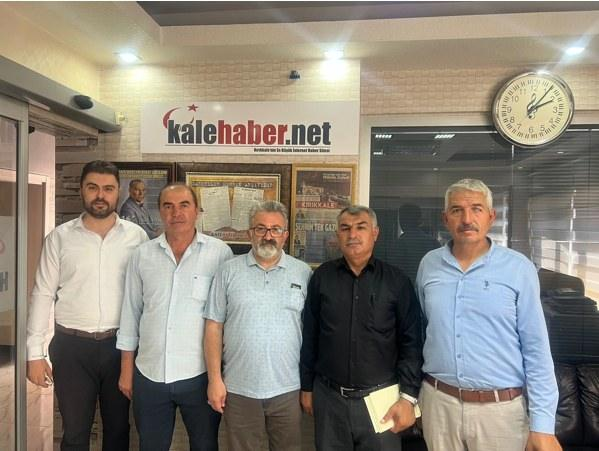
Derneğimiz açılış öncesi davet ziyaretleri yaptı
Derneğimiz Çeşnigir-Der, 6 Eylül 2026'daki açılış töreni öncesinde Kırıkkale'de bir dizi ziyaret gerçekleştirdi. Yönetim kurulu üyeleri, Araştırmacı…
Devamını oku ›